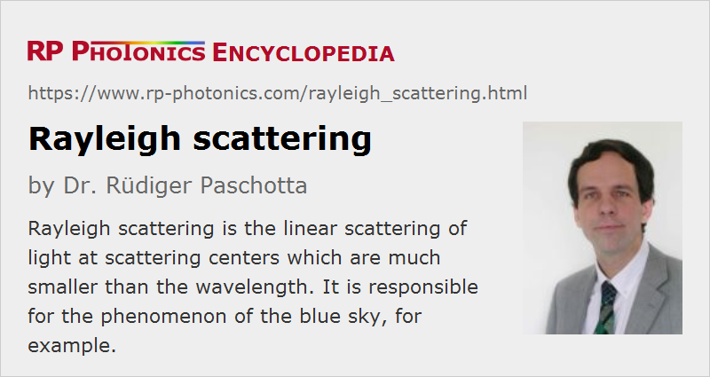

Rayleigh Scattering
Definition: scattering of light at scattering centers which are much smaller than the wavelength
More general terms: scattering
German: Rayleigh-Streuung
How to cite the article; suggest additional literature
Author: Dr. Rüdiger Paschotta
Rayleigh scattering is a common scattering optical phenomenon, named after the British physicist Lord Rayleigh. It is linear scattering of light at scattering centers which are much smaller than the wavelength of the light. Under such circumstances, the scattering occurs with intensities which are proportional to the in-coming optical intensity, to the fourth power of the inverse wavelength, and to 1 + cos2 θ, where θ is the scattering angle. Forward and backward scattering (θ = 0 and θ = π, respectively) are equally strong.
Scattering at larger centers can be described by Mie scattering theory (named after Gustav Mie). Here, the characteristics are different; for example, the scattering amplitudes are stronger for forward scattering, and the wavelength dependence is different.
Scattering centers for Rayleigh scattering can be individual atoms or molecules. However, one can also describe Rayleigh scattering in the atmosphere, for example, as resulting from microscopic density fluctuations, which are caused by the random distribution of molecules in the air.
Note that for scattering at multiple particles or scattering centers, one cannot simply add the powers scattered by individual centers, as there are interference effects: amplitudes must be added. As a result, there would be no Rayleigh scattering of light in a perfectly pure and regular crystal. Also, Rayleigh scattering in air is possible only due to the above-mentioned random density fluctuations.
Scattering Losses in Optical Fibers
In amorphous optical materials such as silica glass, there are always random density fluctuations due to the irregular microscopic structure. These are even substantially stronger than they would normally be at room temperature, because during fiber fabrication, the density fluctuations which occurred for the fiber near the glass softening temperature are “frozen in”.
Rayleigh scattering sets a lower limit to the propagation losses in optical fibers. Of course, additional losses can result e.g. from an irregular core/cladding interface (particularly in the refractive index contrast is high), from scattering and absorption by impurities, and from macroscopic and microscopic bending. Silica fibers which have been optimized for long-distance optical fiber communications have very low propagation losses, approaching the limit given by Rayleigh scattering. For wavelengths substantially below the often used 1.5-μm region, Rayleigh scattering alone would be higher than the actual losses of these fibers at 1.5 μm wavelength. At substantially longer wavelengths, Rayleigh scattering would be weaker, but the infrared absorption of silica sets in.
In principle, one could have mid-infrared fibers made of other glasses (e.g., fluoride fibers), which could have even lower losses, but in practice silica fibers have reached the best figures.
Most of the Rayleigh-scattered light in a fiber exits the fiber on the side. Only a small portion of the scattered light is scattered back such that it is again guided in the fiber core. Therefore, the return loss of fiber devices is generally very high; the overall return loss of a fiber setup is more often caused by reflections at interfaces such as fiber ends, mechanical splices or fiber connectors.
Due to the high optical intensities which often occur in optical fibers, nonlinear scattering processes like Raman scattering and Brillouin scattering can also occur. Rayleigh scattering, being a linear process, is equally important at low light intensities.
Questions and Comments from Users
Here you can submit questions and comments. As far as they get accepted by the author, they will appear above this paragraph together with the author’s answer. The author will decide on acceptance based on certain criteria. Essentially, the issue must be of sufficiently broad interest.
Please do not enter personal data here; we would otherwise delete it soon. (See also our privacy declaration.) If you wish to receive personal feedback or consultancy from the author, please contact him e.g. via e-mail.
By submitting the information, you give your consent to the potential publication of your inputs on our website according to our rules. (If you later retract your consent, we will delete those inputs.) As your inputs are first reviewed by the author, they may be published with some delay.
See also: fibers, Raman scattering, wavelength
and other articles in the category general optics
|  |
If you like this page, please share the link with your friends and colleagues, e.g. via social media:
These sharing buttons are implemented in a privacy-friendly way!